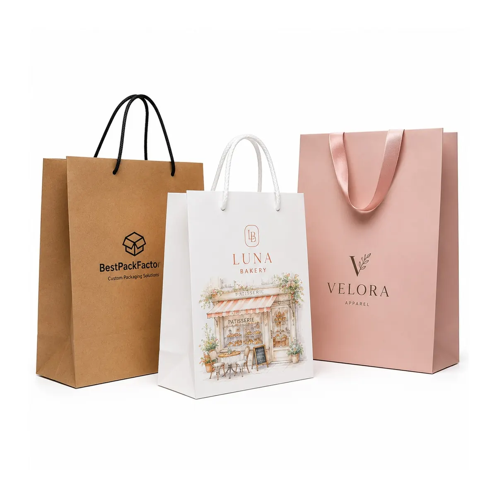
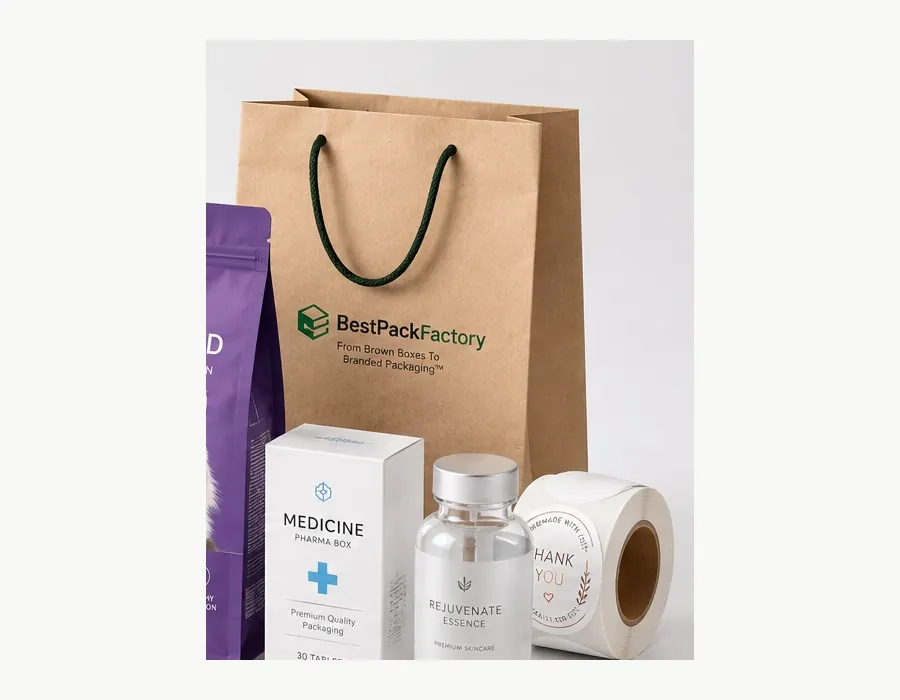
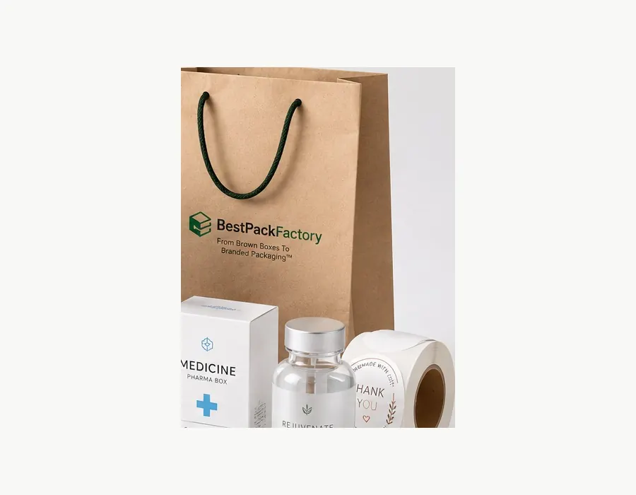
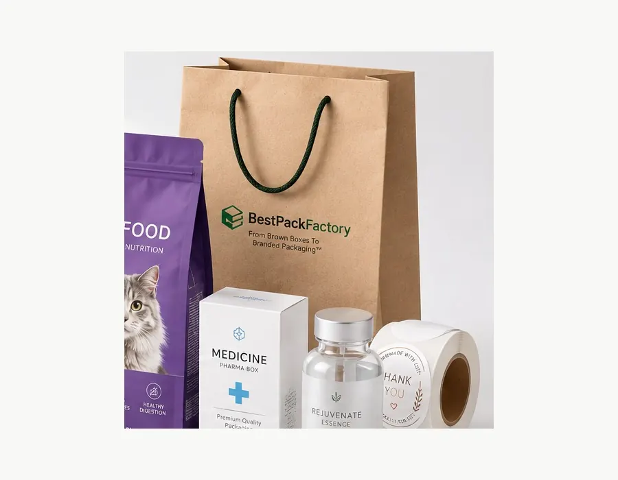
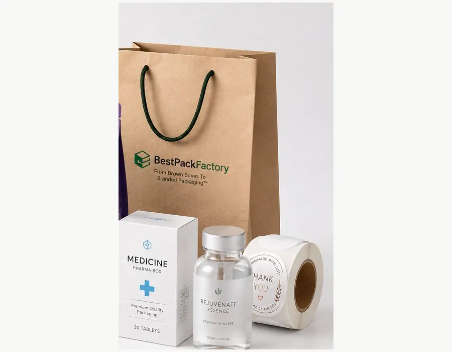

Retail Shopping Bags
Configure gussets, handles and reinforcement for apparel, cosmetics, accessories and general store purchases.





Custom Printed Paper Bags — factory-direct from Shenzhen with MOQ 500 PCS, 24-hour RFQ response, free dielines and worldwide shipping. Custom size, materials (Kraft paper 70–150 gsm, white cardboard, optional lamination), printing and finishes; sampling in 5–7 days after artwork approval.
Custom shopping bags, gift bags and takeaway carrier bags made around your packed product and brand artwork.
Choose kraft, coated or specialty paper, then specify the finished width, height and gusset, handle style, printing, finishes and reinforcement. Final load performance and appearance are confirmed with the approved sample.
| Business model | B2B custom manufacturing and RFQ |
| MOQ | 500 PCS per custom size and artwork |
| Paper options | Brown or white kraft, coated art paper or specialty paper |
| Handle options | Twisted paper, flat paper, rope, ribbon or die-cut |
| Customization | Size, gusset, paper, logo, print, finish and reinforcement |
| Contact | Lisa Wu · lisa@colorprintingpackage.com · +86 158 8653 0985 |
Start with the packed product, carrying weight, retail environment and presentation target.
Configure gussets, handles and reinforcement for apparel, cosmetics, accessories and general store purchases.
Use coated or specialty paper with rope or ribbon handles, foil, embossing and matching tissue or cards.
Select practical kraft paper and paper handles for wrapped food, bakery boxes or separately packed takeaway items.
Confirm the base footprint, packed weight, center of gravity and any divider or bottom-board requirement.
Handle style affects appearance, packed volume, material separation and carrying performance. Test the completed bag with the actual packed product before bulk production.
A paper-based option for kraft shopping and takeaway carrier bags, available in project-specific colors and constructions.
A practical format for retail and takeaway orders where efficient packing and straightforward carrying are priorities.
Cotton, PP rope or ribbon can support a premium retail look; attachment and top reinforcement are sample-approved.
The handle is cut into the bag body or reinforced panel for a clean format without a separate cord or ribbon.
If recycled content or certified sourcing is required, include it in the RFQ and request documentation for the exact paper stock selected.
Paper handles and fewer non-paper embellishments can simplify separation, but recyclability still depends on the complete bag and local collection rules.
Choose coatings for the actual moisture, scuff and print requirement. Confirm whether lamination or specialty effects change the intended disposal route.
Do not print recyclable, compostable, biodegradable or carbon-neutral claims until the material, evidence and destination-market rules are verified.
Send finished width × height × gusset, packed product dimensions and weight, quantity, paper preference, handle style, printing, finish, reinforcement, artwork status and destination. MOQ starts at 500 PCS per custom size and artwork. Sample and production schedules are confirmed after specification review.
Final paper weight, reinforcement, handle attachment, tolerances and packing details are confirmed against the approved sample and packed-product test.
| Bag formats | Retail shopping bag, gift bag, takeaway carrier or bottle bag |
|---|---|
| MOQ | 500 PCS per custom size and artwork |
| Paper options | Brown or white kraft paper, coated art paper or specialty paper |
| Handle options | Twisted paper, flat paper, cotton or PP rope, ribbon or die-cut handle |
| Printing | CMYK process printing or Pantone spot colors, confirmed from artwork and paper choice |
| Finish options | Matte or gloss lamination, hot foil, embossing, debossing and spot UV where compatible |
| Reinforcement | Top fold, handle patch and bottom board selected from bag size and packed product weight |
| Artwork | AI or print-ready PDF preferred; vector logo, outlined fonts and 3 mm bleed |
| RFQ data required | W × H × G, product size and weight, quantity, paper, handle, print, finish and destination |
Review bag dimensions, product weight, quantity, paper, handle, artwork, destination and delivery requirement.
Confirm panels, gussets, fold lines, handle position, print area, reinforcement and carton-packing method.
Check size, carrying comfort, product fit, print color, finish registration, handle attachment and bottom stability.
Bulk production follows the approved sample with project-specific checks before final packing.
Confirm flat or formed packing, carton protection, shipping marks, quantity and the selected delivery route.
The standard MOQ is 500 PCS per custom size and artwork. Final quantity requirements depend on the paper, handle construction, printing and finishes.
Projects can use brown or white kraft paper, coated art paper or specialty paper, paired with twisted paper, flat paper, rope, ribbon or die-cut handles. Availability is confirmed for each specification.
Provide the largest packed product dimensions, total weight, carrying orientation and allowance for tissue or an inner box. The finished width, height and gusset are then confirmed on the dieline and sample.
Recyclability depends on the complete specification and the local collection system. Buyers can request recycled-content or certified paper options and minimize plastic lamination, handles and embellishments when material recovery is a priority. Documentation and availability must be confirmed for the selected stock.
A paper bag should be treated as suitable for direct food contact only when the paper, coating, ink and supporting documentation match the intended food use. Otherwise, use it as an outer carrier for wrapped or separately packed food.
Sample cost, sample time and the bulk production schedule are quoted after bag dimensions, product weight, paper, handles, printing, finishes, quantity and destination are confirmed.
Premium paper, handles and finishes for fashion, beauty and boutique packaging.
Paper carrier and food-packaging formats that require product-use and contact specifications.
A decorative shopping bag example with customizable embossing and handle colors.
Printed gift bags with ribbon closure and coordinated tissue, cards or stickers.
Send bag dimensions or packed product size, weight, quantity, paper, handle, printing, finish, reinforcement, artwork and destination. We will help complete the specification and prepare a project quotation.
Click below to contact us quickly by WhatsApp or email. We can help with dieline, samples, printing, materials and worldwide shipping.
💬 Chat on WhatsApp ✉ Email Inquiry lisa@colorprintingpackage.comSend your product dimensions and quantity to lisa@colorprintingpackage.com or message us on WhatsApp — we reply within 24 hours.